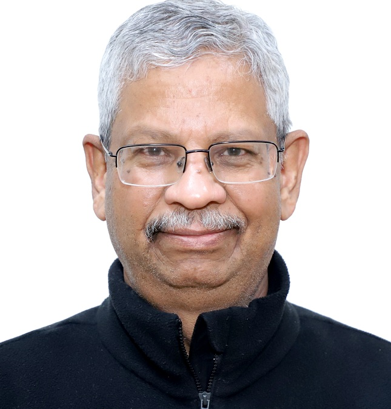

S. G. Deshmukh
Research interests: Total Quality Management, Materials Management, Supply Chain Management, Operations Planning & Control.

Kiran Seth
Research interests:Operations Research, Applied Probability Models, Fuzzy Models